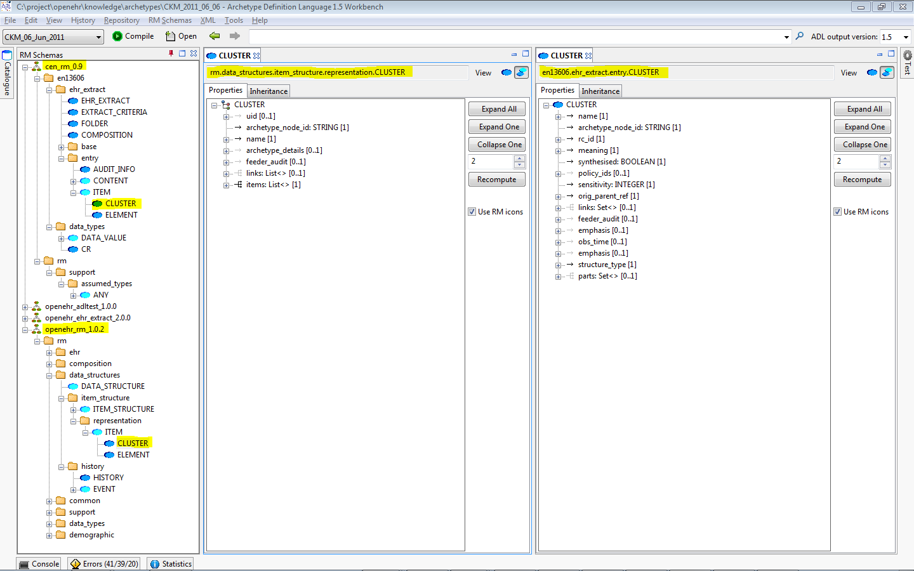

Overview
A draft version of the EN13606-1 schema for the AWB has been developed, along with some example archetypes. This is intended to show how ADL / AOM 1.5 functions for archetypes built on a different reference model, and also to enable organisations working with EN13606 to have a more formal tool basis for developing archetypes, templates and generally migrating to ADL/AOM 1.5. The entire EN13606 model can be viewed in the AWB RM schema and Class tools, and comparisons can be made with classes in the openEHR reference model.
EN13606 schema for AWB
An initial schema for EN13606-1 has been included in the set of RM schemas used by AWB. This was produced by Christoph Rinner (Medical University of Vienna) and Thomas Beale (Ocean Informatics). The definitive copy of this resides in the openEHR knowledge2 repository. If you are interested in being added to the committers list to work on this schema, please email webmaster@openehr.org.

Comparison of 13606 and openEHR Classes
The entire EN13606 model can be viewed in the AWB RM schema and Class tools, and comparisons can be made with classes in the openEHR reference model.
{kind=link}
EN13606 archetypes
Some initial 13606 archetypes have been created here in the knowledge2 repository. These are currently purely experimental and unreviewed.